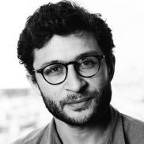

L’ascension du numérique et la libéralisation des échanges au niveau mondial ont provoqué de nouveaux phénomènes de convergence entre l’industrie des communications électroniques et les contenus audiovisuels.
Le développement technologique est en grande partie, la raison pour laquelle ces contenus sont devenus de plus en plus accessibles par l'intermédiaire des réseaux de communications électroniques. Ce rapprochement si étonnant a bouleversé les modèles traditionnels de diffusion des biens créés dans différentes industries culturelles. L'entrée du numérique dans l'univers communicationnel a donné lieu à de nouveaux paradigmes et a conduit au développement de nouvelles stratégies des acteurs de l'industrie des communications.
Par ailleurs, la révolution numérique a bouleversé les concepts traditionnels d'accès aux contenus qui se sont développés durant le 20ème siècle et a placé les contenus au cœur de la convergence des industries de culture et de communication. Le rapprochement entre les acteurs de l'industrie des communications électroniques et les acteurs du paysage audiovisuel français a provoqué l'émergence de nouveaux modes d'accès aux contenus audiovisuels ainsi que de nouveaux modèles économiques pour les acteurs du marché.
C’est dans cette logique qu’a vu le jour l’Autorité de régulation des télécommunications (ART), le 5 janvier 1997, à laquelle succédera
l’Autorité de régulation des communications électroniques et des postes (ARCEP) en 2005. L’ARCEP est «l’arbitre expert et neutre, au statut d’autorité administrative indépendante du secteur des télécoms ». Elle est l’architecte et le gardien des réseaux d’échanges en France. Elle veille à ce que les libertés d’expression, d’entreprise ou d’accès au savoir induit par ces infrastructures demeurent un «bien commun». L’Autorité définit les règles d’accès aux licences de fréquences mobiles, d’une concurrence la plus ouverte possible ou d’une couverture du territoire équitable.
Ce cadre établi, nous allons voir tout au long de cet article l'enchaînement de plusieurs éléments qui ont participé et qui participent toujours à l’ascension du numérique à laquelle nous faisons face aujourd’hui. Et cela commence par l’ascension de la fibre optique.
Interview avec Jean Cattan : Retour sur son parcours et ses ambitions

Dans le cadre de notre travail de groupe, nous devions écrire et décrire les sujets que l'on aurait aimés abordé lors de la conférence. Sauf que l'on s'est rendu compte que ce serait un peu frustrant d'étayer simplement d'éventuelles questions ouvertes. Raison pour laquelle nous avons directement contacté M. Cattan afin d'avoir un réel échange avec lui et lui poser nos interrogations à lui directement.
Lors de la conférence, M. Cattan a évoqué à plusieurs reprises que son propos n'était nullement neutre mais justement bien guidé du fait de son rôle au sein de l'ARCEP mais aussi et surtout, bien appuyé par ses convictions. C'est dans cette logique que nous lui avons posé des questions liées à son parcours particulier qui lui est propre.
Pouvez-vous nous décrire votre parcours tant universitaire que professionnel, qui vous a mené aujourd'hui à votre poste, en tant que secrétaire général de l'ARCEP ?
Alors, j'ai fait une fac de droit d'abord à Paris 1 et puis un Master 1 (une maitrise) en droit européen. Un chargé de TD m'a dit qu'il fallait que je fasse le
collège d'Europe et donc ça me plaisait bien comme idée mais je ne voulais pas faire que du droit non plus. Je voulais voir un peu de pays et comme je n’avais pas fait d’Erasmus, je suis allé faire mon M2 à Aix en Provence. Il y avait deux professeurs du collège d'Europe dont Rostane MEHDI et Francis SNYDER. Ils avaient reconstitué une sorte de mini collège d'Europe avec des gens qui venaient de toutes les nationalités.
Ensuite, une fois que j'avais mes lettres de recommandation en poche, j'ai fait le collège d'Europe en Pologne dans un coin qui s'appelle Natolin. Le collège d'Europe est un organe de formation postuniversitaire pour former les fonctionnaires et les cadres dirigeants au niveau européen et c'est souvent comparé à L’ENA européenne mais ça reste très informel.
A l'époque, c'était très important pour moi, en 2006, car ce pays [Ndlr : la Pologne] venait d'être admis dans l'Union européenne. Aujourd'hui, quand on parle de la Pologne dans l'Union européenne, c'est plutôt un ennemi de la construction européenne mais à l'époque c'était l'avenir. Et je viens d'une génération, où on a vu la chute du mur de nos yeux et pour moi c’est un souvenir d'enfant. Il y a une conscience européenne très forte qui a déterminé mon parcours.